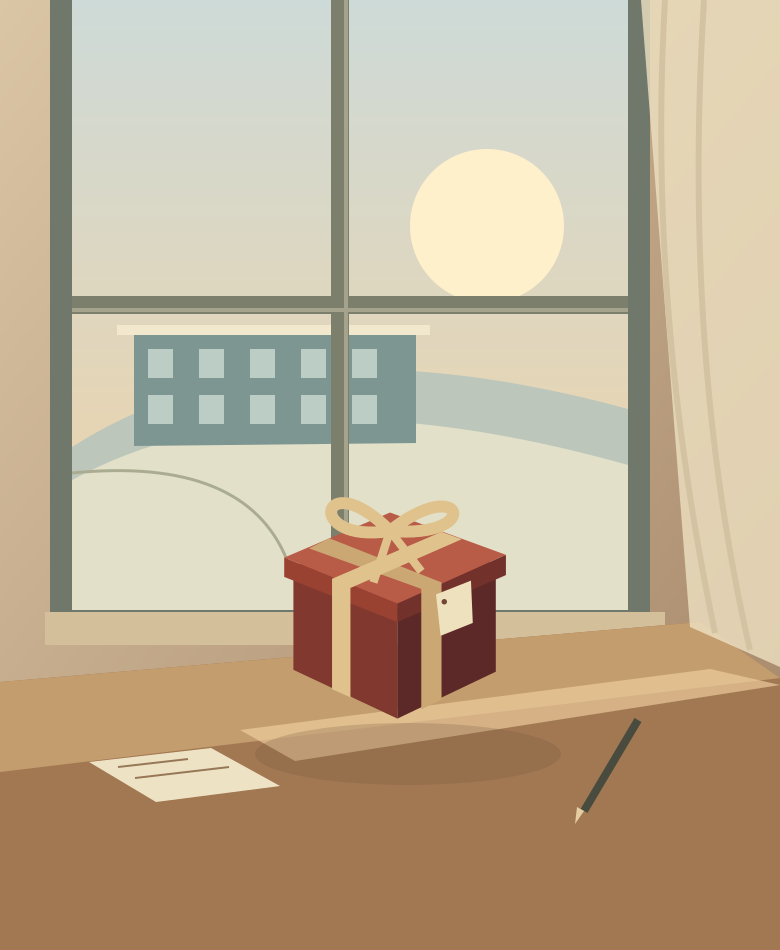

サンタが残したプレゼントから、はじまる。
ひとつの謎。
5つの、物語の入口。
冷たい冬の空気と、最後に残る温かさ。
気になる案を開いて、文字・背景・動きを比べてみてください。
タイトルと導入文も含めた仮案です。謎解き本編は含みません。
サンタが残した、宛先のない贈りもの1月9日の、
クリスマス。
クリスマス。
A
雪の校舎
物語への没入 / おすすめ
 触れて、考えたくなる。サンタの
触れて、考えたくなる。サンタの忘れもの。未配達
B
宛先不明の手紙
手がかりの発見
「なぜ？」を、大きく。このプレゼント、なぜここに？
C
未配達の調査記録
推理への参加
 不思議の先に、ぬくもり。冬のおくりものと
不思議の先に、ぬくもり。冬のおくりものと名前のない手紙
D
冬の物語の本
幻想的な物語

静かな謎を、あなたへ。まだ、届けたい。
E
朝の教室
温かい余韻
選ぶときの目安
どんな気持ちで、
謎を解きはじめてほしい？
| 案 | 入口の感情 | デザインのこだわり |
|---|---|---|
| A 雪の校舎 | 物語への没入 | 冷たい青の校舎に、プレゼントと窓の灯りだけを温かく。物語へ一瞬で引き込む、映画のポスターのような案。 |
| B 宛先不明の手紙 | 手がかりの発見 | 封筒、消印、書き直した宛名。紙の手触りを思わせる重なりで「手がかりを探したい」を引き出す案。 |
| C 未配達の調査記録 | 推理への参加 | 赤・黒・紙色の強い対比と、調査資料のレイアウト。中学生に「自分たちの出番だ」と感じてもらう案。 |
| D 冬の物語の本 | 幻想的な物語 | 深緑と真鍮色の線、月、枝、開いた本。幼いクリスマス装飾に寄せず、静かな寓話の入口として見せる案。 |
| E 朝の教室 | 温かい余韻 | 余白のある白い紙面と、冬の朝の窓辺。怖さよりも「誰かのために解く」優しさを感じる案。 |
おすすめは A「雪の校舎」。学校が謎の舞台だとすぐに伝わり、赤い箱と窓の灯りで、怖すぎないミステリーにできます。温かさを先に感じてもらうならE、手がかりを探す楽しさならBが合います。
参考と、今回の翻訳
借りるのは、見せ方の考え方。
いただいたリストから、今回の題材に近い5サイトを重点確認しました。
校舎を見せる構図、証拠品の重なり、絵本の額縁を、独自の図版と文章に置き換えています。
- 最後の放課後からの脱出 ↗ — 学校の情景と大きなタイトル
- 忘れ物探偵と放課後のショートフィルム ↗ — 手元の証拠品と紙の重なり
- 秘密の庭の品評会 ↗ — 挿絵と枠でつくる物語の入口
- HOTELブルーローズの99の部屋 ↗ — 青を基調にした謎めいた建物
- RIDDLER ↗ — はっきりした情報の強弱
図版はこのプレビュー用にSVGで制作。参考先の画像・ロゴ・文章は使用していません。
分析の詳細・検証結果は DESIGN.md と README.md に記録しています。